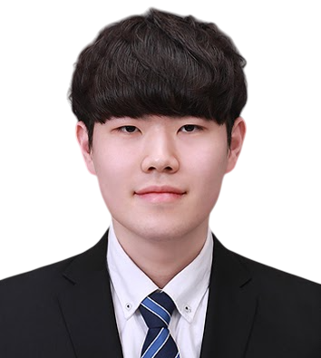
Research Scientist · Team Pegasus, TwelveLabs
Sanghyeok Lee
Hi! I am Sanghyeok Lee, a Research Scientist on Team Pegasus at TwelveLabs. I earned my Ph.D. in Computer Science at Korea University under the supervision of Prof. Hyunwoo J. Kim. Before joining TwelveLabs, I was an InnoCORE-funded postdoctoral research fellow at KAIST's Machine Learning & Vision Lab.
My research goal is to build reliable and efficient AI systems capable of understanding multimodal information over extremely long contexts, such as videos spanning months or years. To this end, I have been working on a range of challenging yet exciting problems spanning multimodal LLMs, agentic AI, long-context understanding, efficient deep learning and adaptation, and computer vision, including 3D vision.
Research
Research interests
My primary focus is ultra-long-context multimodal understanding, with broader interests in efficient learning and visual intelligence.
- 01Multimodal LLMs
- 02Agentic AI
- 03Long-context Understanding
- 04Efficient DL
- 05Computer & 3D Vision
- 06Efficient Adaptation
Selected work
Selected publications
Updates
Featured news
2026
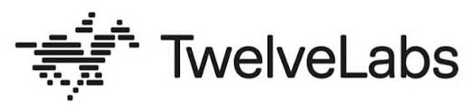
Joined Team Pegasus at TwelveLabs as a Research Scientist.
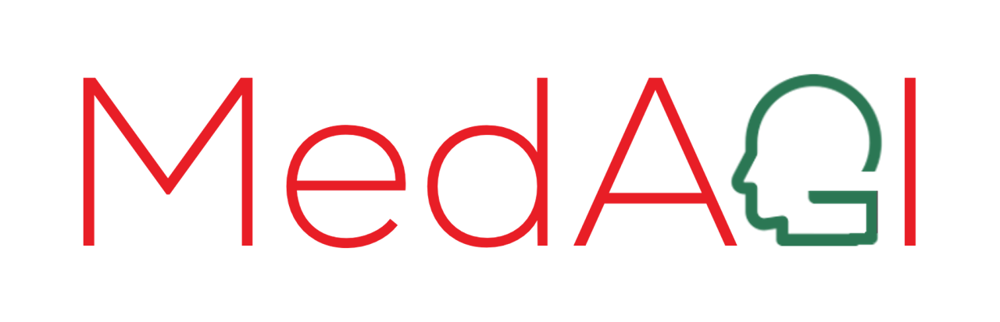
Served as a Program Committee member for the MICCAI 4th International Workshop on Foundation Models for General Medical AI.
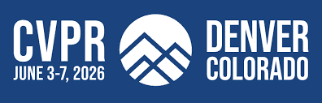
MoE-GRPO and DocPrune were accepted to CVPR 2026.
2025
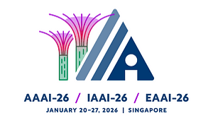
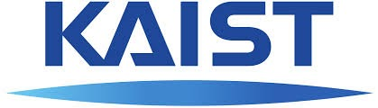
Joined KAIST MLV Lab as a postdoctoral research fellow.
Awarded the InnoCORE Postdoctoral Fellowship.
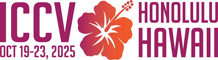
Representation Shift was accepted to ICCV 2025.
Served as a Program Committee member for the MICCAI 3rd International Workshop on Foundation Models for General Medical AI.
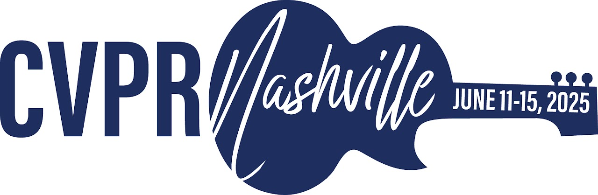
EfficientViM was accepted to CVPR 2025.
Earlier news, 2021-2024
2024
Received the Outstanding Paper Award at Korea University.
Served as a Program Committee member for the MICCAI 2nd International Workshop on Foundation Models for General Medical AI.
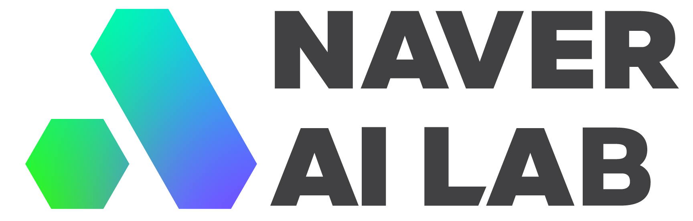
Gave an invited talk at Naver AI Lab.
- Token Reductions for Efficient Vision Transformers
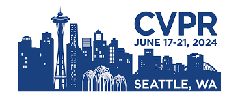
MCTF and vid-TLDR were accepted to CVPR 2024. Travel Award
2023
Gave an invited poster presentation at KCCV 2023.
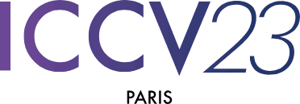
RPO was accepted to ICCV 2023.
Gave an invited talk and tutorial at the KCVS Workshop.
- 3D Point Cloud and Transformer
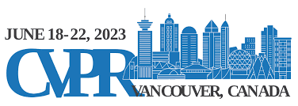
SPoTr was accepted to CVPR 2023.
2022
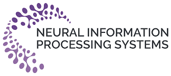
SageMix was accepted to NeurIPS 2022. Travel Award
Gave an invited poster presentation at KCCV 2022.
2021
PointWOLF was accepted to ICCV 2021.